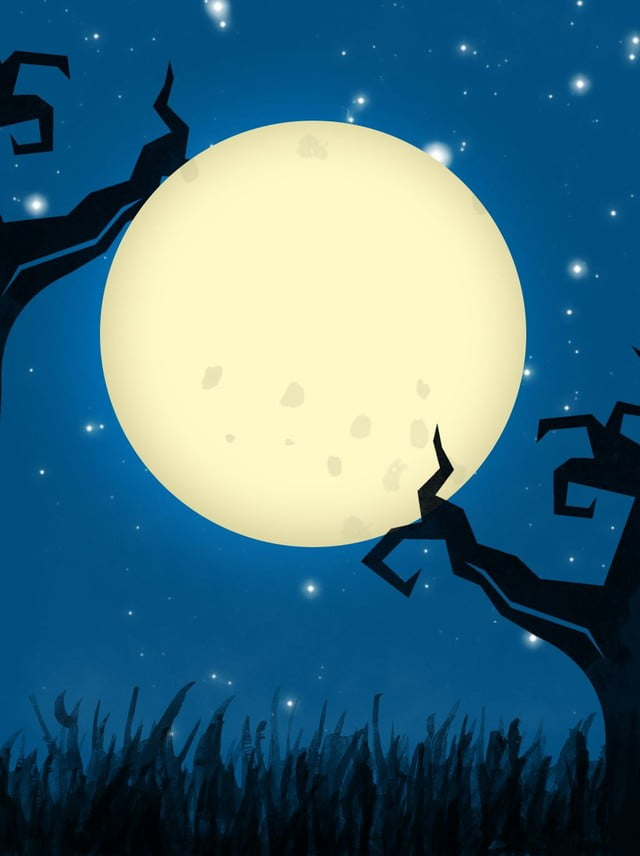
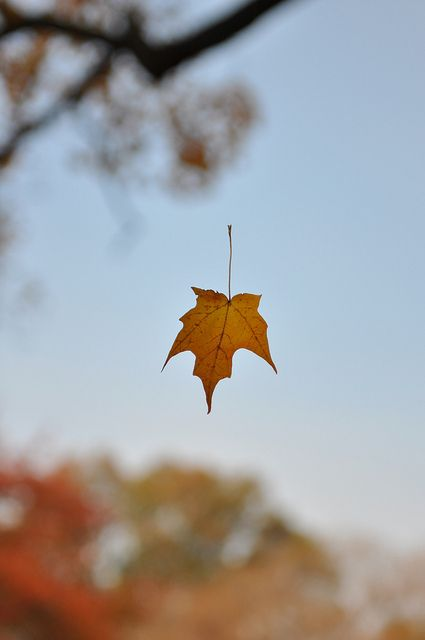

Can you feel the breeze of the second page?
We all love the first day, don't we? - It feels so fresh
It feels enthralling, one can even feel goosebumps and shivers every now and then.
It is all so very beautiful and you curse yourself for being a sissy for sitting silent in a corner
Or maybe you just make it your best day - get a bunch of new friends in school or college
Or maybe just feel good by the smell of the page when reading a book.
Whatever you do, you always remember your first day.

What about the second day, the third day or so forth?
When you still have those stomach cramps but the thrill is reduced.
You still have a feel in you, but you no longer feel bothered by it.
How do you celebrate you second day? Or the third day?
Or the days that carry the description I just laid forth?
Do you know what is more important than anything else?
Celebration...
When a student gets rid of his/her examination, it is time for a celebration.
You passed another day, does that not demand a celebration?
Now, now...life is not an exam. I repeat, it is not an exam.
It is a blank canvas that was left to you to write upon.
The availability of paint is though subject to those things in your life, you couldn't control.

How about a small celebration now itself?
You just completed this second page of this boring web-blog.
Play your favourite music and lay back to rest.
Trust me, you deserve one for being a good reader, one I could never become. XD
And remember, this last verse from day 1 -
You did it!
You did well
Fear not any longer
What you did was your best back then...